01飓风预报的黑箱
十月初，飓风伊萨亚斯以二级强度登陆佛罗里达州德斯廷。
常规预报模型给的判断是，它继续向西，扑向路易斯安那东南部。
Google DeepMind 的人工智能模型从一开始就判对了，它会打在佛罗里达狭长地带的西部。
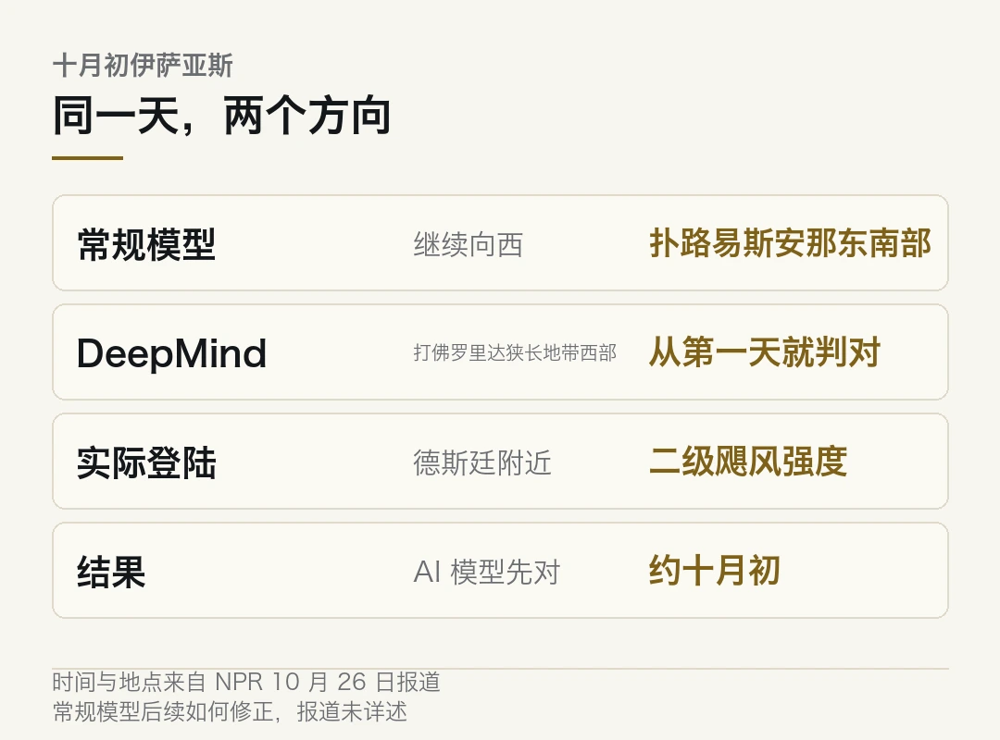
美国国家飓风中心去年第一次把 DeepMind 模型纳入官方预报。到 2025 年飓风季结束时，它已是预测风暴路径与强度最好的模型之一。
迈阿密大学飓风研究员 Brian McNoldy 的原话是，这是我们不习惯的情况，一个新模型很快就成了最好的模型。它几乎一登场就排名第一。
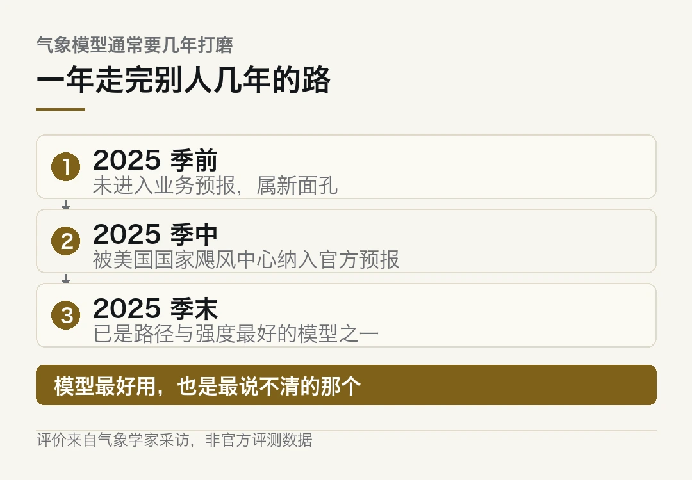
这话听着像夸奖。往下读会发现，它同时是个麻烦。
- DeepMind 的飓风模型在伊萨亚斯路径上，从第一天就压过常规预报模型。
- 它去年被纳入美国国家飓风中心官方预报，到 2025 季末已是路径与强度最好的模型之一。
- 它不靠物理方程，靠几千场历史飓风里学出来的规律。
- 气象学家说，不知道它为什么对，也不知道为什么错。
- 于是出现一个别扭的局面，模型最好用，也是最说不清的那个。
一、一个新模型凭什么一年登顶
气象这行对新模型很保守。
传统数值预报模型引入后，通常要几年打磨才敢进业务。原因不复杂，预报错了代价太大，一次误判就是几百万人的疏散决策。
DeepMind 这个模型没走这条路。
2025 年飓风季结束的时候，它已经被评为预测路径和强度最好的模型之一。一年之内从新面孔到第一名，在这个行当里几乎没发生过。
McNoldy 用了「相当了不起」这个词。做过气象的人说这四个字，分量比听起来重。
因为气象模型的门槛不在算法，在验收。一个新模型要在真实风暴里连续跑对几十次，才敢让它进业务预报。跑错的成本不是重跑一次，是有人按错的路径疏散了。
要理解这个速度，得先看它跟传统模型差在哪。
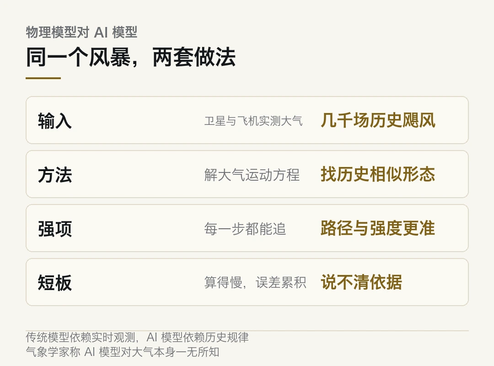
| | 传统数值模型 | AI 模型 ||---|---|---|| 输入 | 卫星与飞机实时测得的大气数据 | 几千场历史飓风及其伴随数据 || 方法 | 解大气运动方程，一步步外推 | 从历史规律里找相似形态 || 强项 | 可解释，每一步都能追 | 路径与强度准确率高 || 短板 | 算得慢，初值误差会累积 | 说不清依据 || 谁在做 | 气象学家与物理学家 | 多数是软件工程师 |
传统模型干的是硬算。温度、湿度、气压、风切变，喂进复杂的方程组，推未来几天大气的演化。它理解大气，因为它在解大气的方程。
AI 模型不干这个。
它读历史。几千场过去的飓风，每场都有完整的观测记录和最终结果。模型从里面学出「什么样的初始形态，接下来通常往哪走」。
迈阿密的气象学家 Michael Lowry 说得直白。AI 模型除了当前这张图景之外，对大气一无所知。它不依靠大气运动的主导方程，也就是物理规律，来做预测。
还有一句更扎心的。设计和开发这些模型的大多数人，甚至不是气象学家。他们是软件工程师，做神经网络。
二、它为什么对，没人说得清
Lowry 用了「黑箱」这个词。
我们不知道它们为什么能预报正确，也不知道它们为什么会预报错误。
对气象学家来说，这不只是学术洁癖。风暴期间，几百万人仰赖这份预报决定走还是留。依赖一个自己不完全理解的系统，会让人心里发毛。
他的原话是，这让我们有点不舒服，因为我们想知道你为什么能得出正确答案。
这个不舒服，不是对新技术的不信任。是对「答对了但说不出所以然」这件事本能的警惕。
三、可预报员还是继续用它
现实这一层更值得看。
模型说不清，但预报员没有停用。
原因很实际。路径预报差一百公里，疏散范围就要重划。差三百公里，可能整条海岸线的准备都白做。在准确率面前，「可解释」这个要求会被往后排。
于是形成一个分工。AI 模型出主判，人来做复核和解释。
美国国家飓风中心的做法就是这样。它把模型纳入官方预报，但发布出去的每一份警报，仍然由预报员签字。
这个安排能撑一阵子。但它有个前提，就是人对模型的失误模式有把握。
那这个前提成立吗？
不成立。黑箱最麻烦的地方恰恰是失误模式也不透明。你知道它 90% 的时候对，但你不知道那 10% 会出现在什么天气形势里。
传统模型出错，你能追到某个初值、某条参数化方案。AI 模型出错，你手上只有输入和一个错的结果，中间是空的。
四、这不只是气象的事
把镜头拉远。
这一周里，同样的形态在三个不同的行业同时出现。
芯片设计那边，Cadence 发布了面向设计智能体的专用模型 Maestro，称初期结果质量提升最多 30%，同等任务的 token 效率最高提升 5 倍。客户能拿自己的设计和数据去后训练，但模型怎么得出那个布局，没人会在评审会上讲清。
蛋白设计那边，西湖大学等团队在《自然》上发了 Pinal，一句功能描述就能生成候选蛋白序列。H 蛋白让固碳途径的产物达到 11.1 mmol/L，是天然大肠杆菌对应蛋白的 1.7 倍。但训练语料因生物安全顾虑没有全部开放，失败候选也没公开。
三件事的共同点不是「AI 很强」。是 这三类系统都已经在替人做高代价判断，而它们的依据都不完整可述。
预报决定疏散，布局决定芯片能不能流片，序列决定实验要不要做。每一个都是钱和时间，有的还涉及人命。
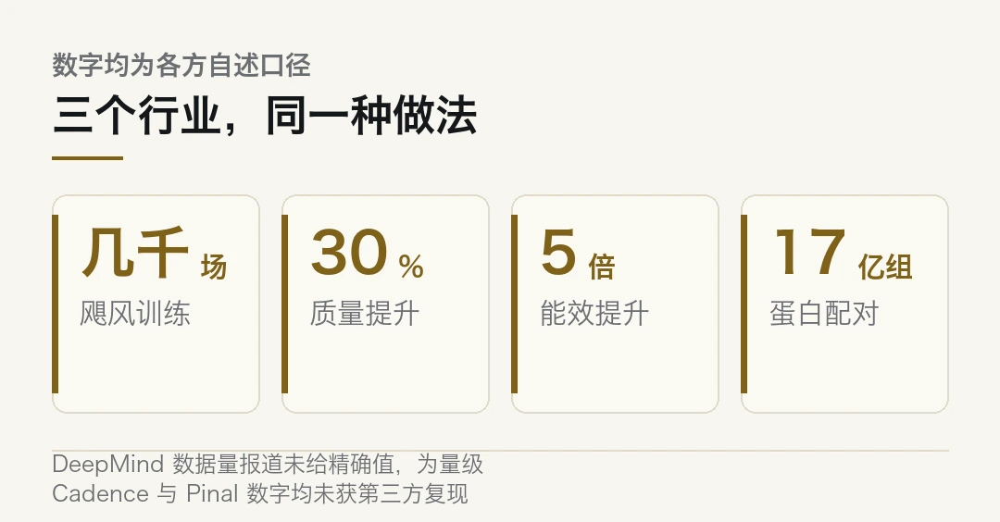
五、专用模型的门槛，不在参数
有人会问，那为什么不干脆用一个更大的通用模型。
因为通用模型答不了这些题。
气象要的是几千场飓风的完整观测序列，芯片设计要的是这个厂这条工艺线的设计规则，蛋白设计要的是序列、结构、功能三者的对应关系。这些数据不在公开语料里，都在具体的机构里。
所以专用模型抢滩，抢的不是参数规模，是三样东西。
数据从哪来。 谁能拿到客户的真实设计、真实的观测、真实的实验记录，谁就有优势。
这一条也解释了为什么专用模型多半由行业里的老公司做，而不是模型公司。气象局、EDA 厂商、生物实验室手上的数据，外面买不到。
结果能不能验。 飓风有登陆点可以对照，蛋白有湿实验可以测，芯片有流片结果。没有可验证的出口，专用模型就是高级猜测。
责任归谁。 预报错了谁签字，布局错了谁担责，序列错了谁负责。这一条最难，也最少被讨论。
前两条决定模型能不能用，第三条决定它能不能进核心流程。
六、签字这件事的分量
回到那场飓风。
DeepMind 的模型判对了，而且是从一开始就判对。这件事本身值得高兴。预报准一点，能少撤错一些人。
但它同时也提出了一个还没答案的问题。当最好的模型是那个最说不清的系统，这个行业怎么把责任接回去。
预报员现在的做法是签字。人签字，就意味着人在承担。可如果人其实并不理解模型为什么这么判，这个签字的分量是虚的。
真正的解法可能不是把模型解释清楚。那在短期内做不到。
更现实的路是给模型配一套可核验的外部约束。比如用历史失误案例做回归测试，比如对特定天气形势设禁用条件，比如让模型在给出路径的同时给出「我这次的把握有多大」。
这一套东西不解决可解释性，但它能让签字这件事重新有内容。
DeepMind 模型的路径与强度表现由气象学家在采访中评价，非官方评测数据。Cadence 的 30% 与 5 倍为厂商自述。Pinal 的 1.7 倍为论文中特定体外体系的实验结果，不等同于工业生产表现。本文仅作事实转述，不构成任何技术选型建议。
本文信息来源
- NPR — Hurricane forecasters increasingly lean on AI models（2026-10-26） · npr.org
- 网易科技 — 飓风预报进入 AI 时代，DeepMind 模型实现「开门即领先」（2026-10-27） · 163.com
- 量子位 — Anthropic 公开 335 页招股书（2026-10-27） · qbitai.com
- 科学网 — 一句「我想要」，AI 就能生成候选蛋白质序列（2026-10-26） · paper.sciencenet.cn
- 生物谷 — 一句话生成一个蛋白质，西湖大学最新《Nature》（2026-10-26） · news.bioon.com
- IT 时代网 — Cadence 推芯片设计智能体专用模型（2026-10-27） · so.html5.qq.com
02给 agent 装一道闸门
AgentTrust 这个项目，做的事情很窄。
它坐在 agent 运行时和工具执行之间。每一个 agent 准备执行的动作，先过它这一关。
扫参数里有没有提示注入的痕迹、有没有泄露的密钥，算一下这个动作的爆炸半径和花费上限，碰到危险动作就挂起，等人批。
动作执行完，事件写进一本签名的审计账本。
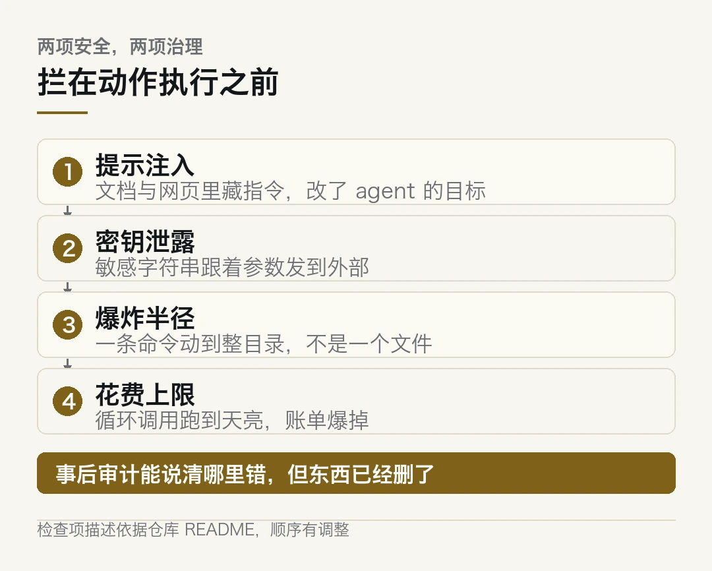
仓库 Apache-2.0，带 Python、TypeScript、Go、Rust 四套 SDK，附一个本地看板。
- AgentTrust v1.0.0 于 10 月 25 日发布，Apache-2.0。
- 拦在动作执行之前，不等事情发生再查。
- 检查四件事，提示注入、密钥泄露、爆炸半径、花费上限。
- 危险动作挂起等人工批准，事件写入签名审计账本。
- 项目很年轻，约十几个星，安全声明没有经过独立验证。
一、为什么这个位置值得一个独立项目
现在给 agent 加限制，主流做法有两种。麻烦在于，两种都有洞。
一种写在系统提示里。「不要删除文件」「不要执行 rm -rf」。这种做法的问题显而易见，提示词是软的，模型可以不理，也可能被一句注入说服。
另一种写在工具封装里。每个工具自己做参数校验。这种做法有效，但要每个工具写一遍，写漏一个就是缺口。
AgentTrust 选的是第三条路。这里有个判断，这个位置早该有人占。它不假设模型守规矩，也不要求每个工具都自带安检，而是在外面架一层统一的门。
它的价值全在拦的位置。动作还没执行，检查就已经做完。
这跟事后审计完全不同。事后审计能告诉你哪里出了问题，但文件已经删了，钱已经花了。这时候再补一句提醒，没有意义。
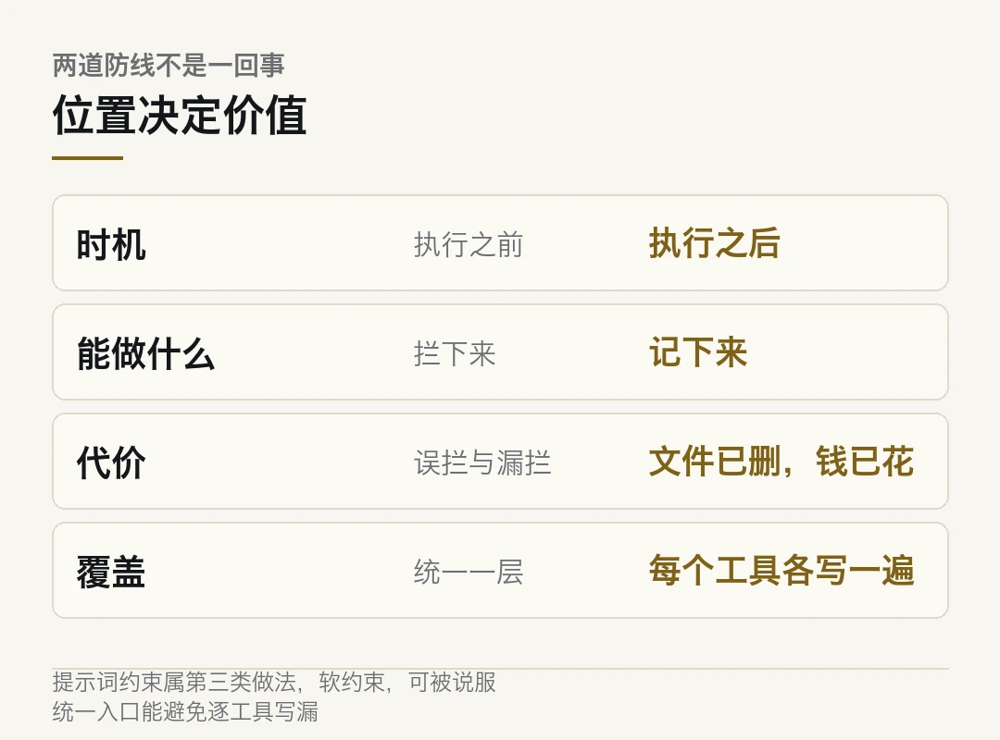
二、它检查的四件事
拆开看这四项检查，能看出设计者的取舍。先看它防什么。
| 检查项 | 防的是什么 | 失败长什么样 ||---|---|---|| 提示注入 | 网页、邮件、文档里藏指令 | agent 被一段文本说服，改了自己的目标 || 密钥泄露 | 敏感字符串进到参数里 | 一次 API 调用把 token 发到外部 || 爆炸半径 | 一次动作影响多少东西 | 一条命令删掉整目录而不是一个文件 || 花费上限 | 累计开销失控 | 循环调用跑到天亮，账单爆掉 |
前两项是安全，后两项是治理。
这个组合说明它的定位不是防黑客，是防自己人。往实里说，防的是自己养的那只 agent 在没人看着的时候干出格的事。
三、怎么接进来
SDK 覆盖 Python、TypeScript、Go、Rust。
Python 那边给了装饰器写法，可以直接套在 LangChain、CrewAI 或者普通函数上，也有 LangGraph 的回调入口。
```python
# 示意写法，不是 AgentTrust 的真实 API，签名以仓库 README 为准from agenttrust import guard # 假想导入
@guard(policy="fs-readonly", cap_usd=2.0)def read_logs(path: str) -> str:
# 这个函数在真正执行前会被拦一次return open(path).read()
# 触发拦截时的行为取决于策略：
# - 扫描参数，命中注入特征就直接拒
# - 参数里出现疑似密钥，拒并记进审计账本
# - 超出 cap_usd 或爆炸半径，挂起等人批```
本地还带一个看板，能看到拦截记录和待批队列。
这几样凑起来，用法就清楚了。权限照给，但给完之后你还睡得着。这算不算一个合格的安全边界？还得看它自己扛不扛得住。
四、这个项目现在不该被当成什么
得说清风险。
它很年轻。据仓库页面，v1.0.0 是 10 月 25 日打的标，星数大概十几个。这个体量的项目，安全声明基本等于作者自述。
它的 LICENSE 文件写的是 Apache-2.0，但 README 上的徽章又写 MIT 加商业授权。这种不一致本身就该让人停一下。
它的检查规则跑在 agent 和工具之间，它自己成了一层中间人。这一层要是被绕过，或者它自己的策略解析有漏洞，防护就是零。
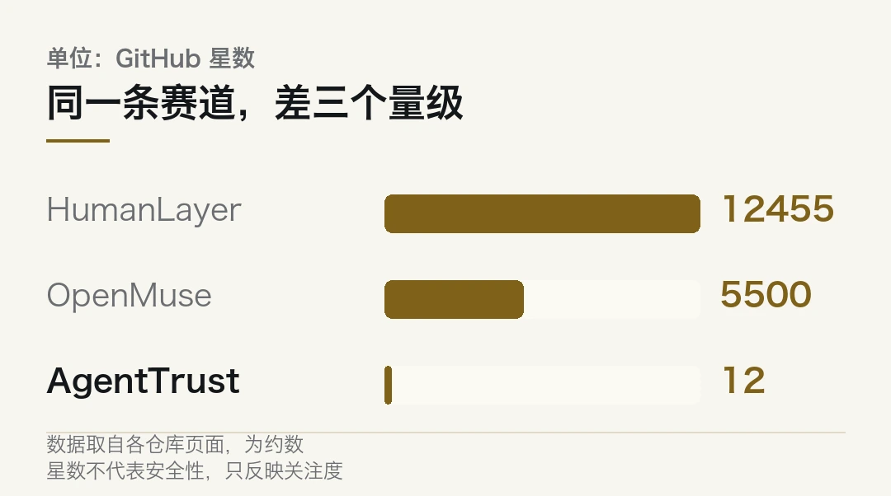
所以现阶段的合理用法是，把它当成一个思路参考，加上一个可选的第一道筛子。
不适合的用法是，把它当成生产环境的安全边界。真要往生产上加，得先自己审一遍源码，再把关键策略写成测试用例，最后做一轮红队。
我还没上手跑过。光看 README 和发布说明，说不出它在真实负载下漏不漏。这条得装上试，试完才有资格评价。
五、这类项目会变多
把镜头拉远一点。
这一周里，各类「agent 治理」项目同时在冒。HumanLayer 做多 agent 的控制面，据其仓库说明是 Apache-2.0，一万两千多星。Optio 把 CI 失败后的 agent 恢复做成了通用工作流平台。Radian 在 Rust 单二进制里塞了一个带闸门的编排器，只合并通过 gating 的任务。
方向一致。前两年比的是 agent 能干什么，现在开始比怎么管住它。
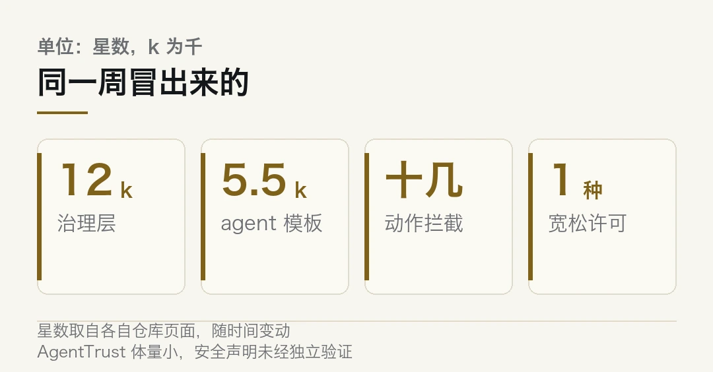
推动这件事的不是道德，是账。
一个会自己调工具、自己循环、自己花钱的东西，一旦接进真实系统，出错的方式就从「答错一句话」变成「做错一件事」。答错可以重问，做错要恢复。
所以治理层会变成标配，跟当年日志、监控、告警走过的路一样。先是可选项，再是加分项，最后是没它就不让上线。
AgentTrust 现在的位置大概在第一步。它可能活不下来，但这个位置会有人占住。
本文信息来源
- AgentTrust — 仓库与 v1.0.0 发布说明（2026-10-25） · github.com
- my2cents.ai — Open Source Agent Tools: October 26, 2026（2026-10-26） · my2cents.ai
- HumanLayer — 仓库说明（2026-10-26） · github.com
- zendot.org — HumanLayer: Steer Claude Code, Codex and Other Coding Agents From One Place（2026-10-26） · zendot.org
- vibecodes.net — Agent Swarm 工具索引（2026-10-26） · vibecodes.net
03芯片设计的模型，开始收租了
Cadence 10 月 27 日发布了一组专用 AI 模型，名字叫 Maestro，面向它的芯片设计智能体。
厂商给的两个数是，初期结果质量提升最多 30%，同等任务下的 token 效率最高提升 5 倍。
首批模型 2026 年第四季度向部分早期客户开放。
这两句话里，真正决定胜负的是后面那一句。
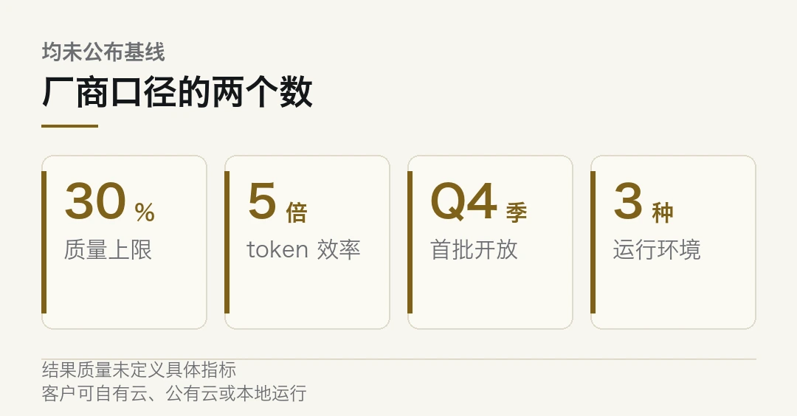
一、EDA 厂商为什么自己做模型
先说清背景。麻烦在于，这件事的门槛藏在流程里，不在模型里。
芯片设计不是画图。一套流程要从 RTL 走到 GDSII，中间是综合、布局、布线、时序收敛、DRC 清理。每一步都是组合爆炸，每一步都有大量经验参数。
这些经验过去存在资深工程师脑子里，存成一张张 checklist，存成内部的 design guideline。新人上手要几年。
EDA 厂商看着这套东西看了三十年。哪一步最容易卡、哪一版工艺线有什么脾气、什么样的结构会在什么场景下爆掉，这些规律它们手上最全。
所以它们做专用模型，不是跨界，是把三十年的流程知识换成权重。
二、30% 和 5 倍是什么量级
得拆一下这两个数的实际含义。听着漂亮，落地要打折。
「结果质量提升最多 30%」这句话里有两个松动点。一是「最多」，二是「结果质量」没定义是哪个指标。在 EDA 语境下，结果质量可能是时序余量，可能是面积，也可能是布线拥塞度。三者经常互相打架。
「token 效率提升 5 倍」更实在一些。同样的任务，消耗的 token 只有五分之一，意味着同样的预算能跑五倍的迭代。
第二条才是这类专用模型的核心卖点。设计智能体最贵的地方在迭代次数。一次布局评估跑几个钟头，工程师一天只能试几版。
但这两个数都是厂商口径。Cadence 没有公布测试集、没有公布基线配置，也没有说明「30%」是在哪个环节上测出来的。
厂商自述的提升幅度，在第三方复现之前，只能当方向上参考。
三、真正的分野在数据流向
这一周里有两家 EDA 厂商先后发了专用模型，时间相隔不到一个月。
它们的做法有一处关键不同。
Cadence 这一版的方案是，客户可以在 Cadence 自有云、公有云，或者自己掌控的本地环境里跑，并且可以用自己的数据、自己的设计、自己的工作流去后训练。
另一家的做法是，模型跑在第三方托管的算力上，且不会用客户数据做训练。
两条路，两个方向。
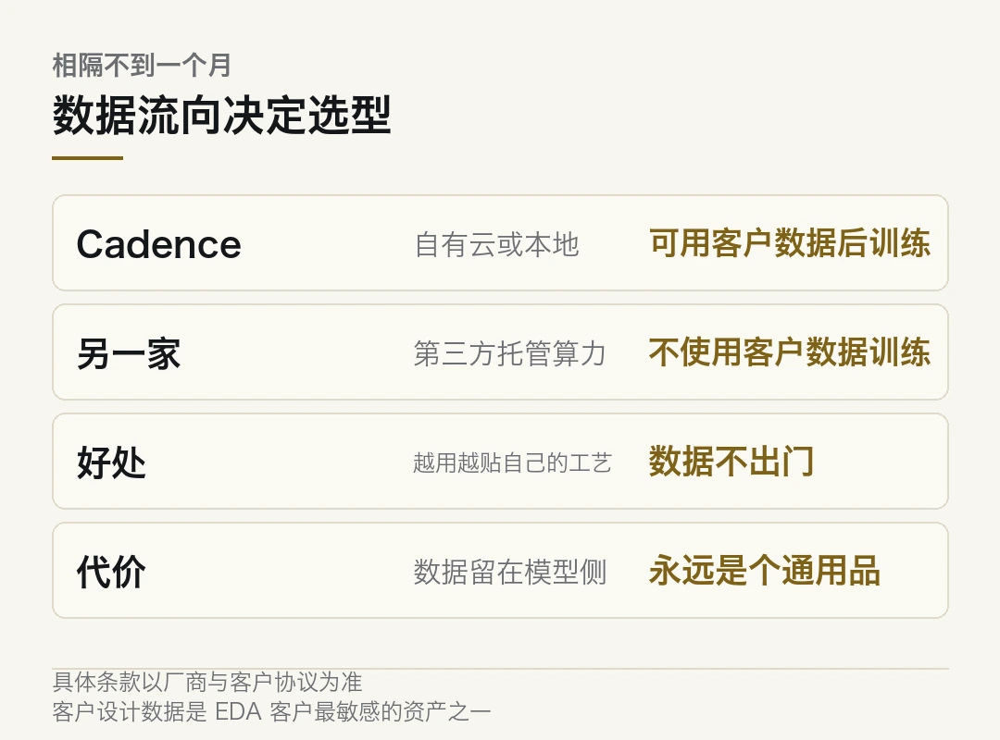
本地部署加自有数据后训练，好处是模型越用越贴自己的工艺线。坏处是你的设计数据在模型里走了一遍，归属和留存的边界要说清。
托管加不用客户数据训练，好处是数据不出门。坏处是模型学不到你这家的特殊性，永远是个通用品。
芯片设计数据是客户最不愿意外流的东西之一。工艺参数、结构偏好、失败案例，这些既是资产也是把柄。
所以选型的时候，第一个问题该是「我的数据去哪儿」。「哪个模型更准」得往后排。
四、专用模型的三个门槛
把这一周的三条线摆在一起看，门槛的形态很一致。
| | 气象（DeepMind） | 芯片（Cadence Maestro） | 蛋白（Pinal） ||---|---|---|---|| 数据来源 | 几千场历史飓风的观测 | 客户自有设计与工艺规则 | 1.35 亿条序列、17 亿组文本配对 || 可验证出口 | 登陆点与路径误差 | 流片结果与签核 | 湿实验活性测定 || 数据能否外流 | 公开观测，无争议 | 客户最敏感资产 | 训练语料因生物安全未全开 || 责任归属 | 预报员签字 | 签核工程师担责 | 实验者验证 |
三列看下来，规律很清楚。
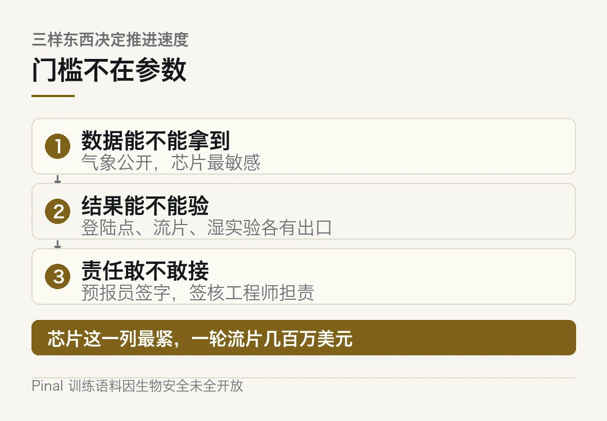
门槛不在参数，在数据能不能拿到、结果能不能验、责任敢不敢接。
气象那一列最松，因为观测数据本来就是公开的，验错也只是预报失准。芯片那一列最紧，因为数据是客户的命根子，验错的代价是流片报废，一轮几百万美元。
所以 EDA 专用模型的推进速度，注定比气象慢。这一条卡在信任上，不在技术上。
五、这件事对设计流程意味着什么
说点具体的。别只看发布会，看工程师每天在干什么。
短期内最可能被吃掉的是重复性最高的那几步。DRC 清理、时序 debug、布局初版的粗调。这些环节的共同点是有明确的判据，对错分明，模型试错成本低。
最难被吃掉的是架构决策。选什么微架构、留多少余量、在功耗和面积之间怎么切。这些没有标准答案，只有取舍，而取舍要有人负责。
中间地带最值得看。比如布线阶段的拥塞预测，比如综合时的策略选择。这些环节模型能给建议，人做最终判断，责任是分摊的。
分摊责任听起来是个好安排，但它有个隐患。真出了问题，是模型的建议错了，还是人没看出建议错了？这个边界在事后很难划清。
六、一句冷判断
Cadence 这一步走得不早。
EDA 长期靠的是流程锁定，不是算法领先。客户用了你的工具链，切换成本高到几乎不可能换。这条路能守很久，但它不产生新的溢价。
专用模型给了它们一个新的收费理由。目的在重新定价，它们想按「智能」收费，而不只是卖工具授权。
至于这个溢价能不能收上来，看两件事。第一，客户愿不愿意把设计数据交出去做后训练。第二，那个 30% 能不能被第三方复现。
第一件是商业谈判，第二件是技术验证。两件都过，专用模型才真算立住了。
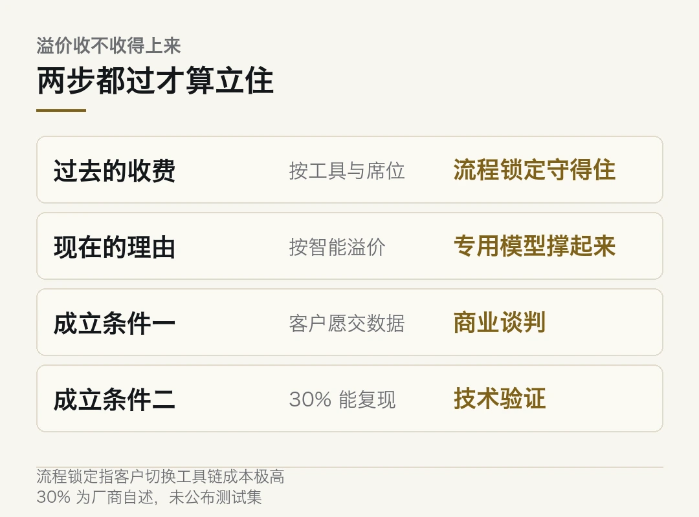
「结果质量提升最多 30%」「token 效率最高提升 5 倍」均为厂商自述口径，未公布测试集、基线与测量环节，尚无第三方复现。客户数据流向的描述基于公开报道，具体条款以厂商与客户协议为准。本文仅作事实转述，不构成任何投资建议。
本文信息来源
- IT 时代网 — Cadence 推芯片设计智能体专用模型（2026-10-27） · so.html5.qq.com
- Cadence — Maestro 专用模型发布说明（2026-10-27） · cadence.com
- 科学网 — 一句「我想要」，AI 就能生成候选蛋白质序列（2026-10-26） · paper.sciencenet.cn
- 网易科技 — 飓风预报进入 AI 时代，DeepMind 模型实现「开门即领先」（2026-10-27） · 163.com
- 同花顺投顾平台 — 半导体设备板块大跌，存储扩产与国产替代逻辑未变（2026-10-27） · t.10jqka.com.cn
04三家把账摊开，三家把门关上
今天的速览，八条。
主线是同一件事。这一周集中出了几份「摊开」的材料，同时也有几处「关上」的动作。
海外 · 335 页招股书里的不做清单
Anthropic 的招股书公开了。几处值得单独拎。
客户是亚马逊和谷歌，不是此前网传的 Cursor 或 GitHub Copilot。公司只设一个经营分部。
最值得看的是那份「不做清单」。招股书明写，尽管极具商业吸引力，但选择不开发图像生成和视频生成模型，把所有算力集中投向编程、Agent 能力和安全研究。
还有一个数字。今年三季度公司超过 80% 的营收，来自过去六个月内刚发布的新模型版本。
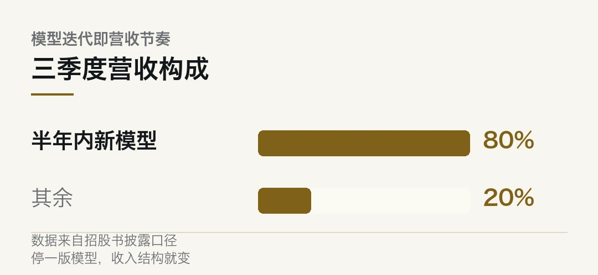
模型迭代在这里不只是研发节奏，也是营收节奏。停一版，收入就掉。
海外 · Mythos 一体双生
顶配的 Mythos 走了一条罕见的路。
满血版只通过受信任计划，向经过严格审查的网络安全和生命科学机构定向开放。大众商用版叫 Fable，已迭代到 5.1，带生产级安全护栏，检测到高危请求会自动拦截，或降级路由给能力较弱的模型。
一个模型，两种权限。招股书给的说明是，它在挖掘软件漏洞和生物科学方面能力过强。
这跟今天的 01 是同一个形态。能力最强的那一档，最不敢全放开。
海外 · 提示词缓存砍掉 97% 成本
Claude Platform 披露了几个基础原语的实测效果。
提示词缓存让长提示词的成本最多下降 97%，延迟降低 60%。另有扩展思考和自适应思考两种模式。
MCP 已捐给 Linux 基金会，成为行业通用标准。招股书里还提到一个处于研究预览阶段的 Model Hardware Standard，名字听着像要把硬件也纳入协议层。
97% 这个数不新鲜，各家都在做缓存。注意一点，写进招股书的意思不一样，它已经是营收结构的一部分。
国内 · 机器人干一天活，忘了昨天在哪
一篇叫 NavHarness 的论文，解决机器人的记忆问题。
问题很具体。做完一个任务，房子已经被它自己改过了。昨天的记录会过期、会出错，也会跟新看到的东西打架。
比如记了「衣柜在二楼」，今天坐标系一变，这条还能不能信。再比如记了「没在厨房找到冰箱」，这是冰箱真不在，还是没看仔细。
对照实验给了个数。同一个模型跑 GOAT-Bench，不用记忆系统的独立会话成功率 65.1%，用了之后 83.7%，差 18.6 个百分点。
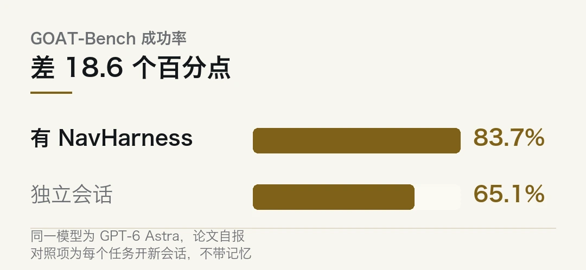
论文提的不是新导航算法，是一整套记忆处理流程。
国内 · 瑞芯微 Q3，净利涨七成
瑞芯微 10 月 27 日披露三季报。
前三季度营收 44.49 亿元，同比增长 41.64%；归母净利润 13.32 亿元，同比增长 70.90%；扣非净利润 13.01 亿元，同比增长 72.09%。
端侧 AI 芯片是主要拉动。有个变量要盯，订单受 PCB 原材料短缺和交期拉长扰动，一部分顺延到四季度等回补。
问题来了，四季度能补上多少？这一条决定全年能不能兑现。
国内 · 存储扩产的国产化窗口
AI 服务器、高容量 DRAM 和 NAND 的需求还在涨，新增供给受厂房建设、设备交付、良率爬坡限制。
几个环节的国产化空间还很大。薄膜沉积、量测检测、涂胶显影，这几道工序在先进制造里价值量高，国产化率却还低。
设备投资通常领先于产能释放，所以这轮订单节奏会先于存储产线稼动率上行。
海外 · 一个自带浏览器的 agent 模板
CopilotKit 发了 OpenMuse，MIT 许可，据其仓库页面约 5.5k 星。
它把一整套东西打包好了。持久 Chromium 配置、沙箱 Linux 终端、Gmail 与日历的 OAuth 适配、PDF 表单填写。任务引擎用 SQL 租约实现中断后续跑。
React Native 一套代码跑 iOS、Android 和 Web，Render 一键部署三个服务。
目前标的是 alpha，明确排除多租户鉴权、支付、图形桌面、语音和银行连接器。想自己攒一个个人 agent 的，这个能省掉拼装环节。
国内 · 具身智能一边封板一边降温
国内这边，上纬新材 10 月 26 日午后封板涨 20%，市值破 600 亿，当晚就发了风险提示，说消费级具身智能机器人业务还在规模化量产爬坡和商业化验证阶段，尚不能预测对 2026 年营收与盈利的影响。
一边是 20% 的涨幅，一边是公告里连续三个「不确定」。这话听着荒诞，但两个都是真的。
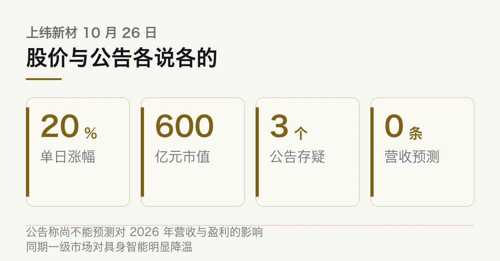
同一周还有另一面。监管层提高机器人企业 IPO 门槛后，一级市场明显降温。
本文信息来源
- 量子位 — Anthropic 公开 335 页招股书（2026-10-27） · qbitai.com
- 腾讯新闻 — 机器人干了一天活，忘了昨天去过哪里，怎么办（2026-10-27） · news.qq.com
- 东方财富网 — 瑞芯微 2026 年第三季度报告（2026-10-27） · quote.eastmoney.com
- 同花顺投顾平台 — 半导体设备板块大跌，存储扩产与国产替代逻辑未变（2026-10-27） · t.10jqka.com.cn
- AlphaSignal — CopilotKit Releases OpenMuse, an Open-Source Personal Agent With Its Own Browser（2026-10-26） · alphasignal.ai
- AI 日报 — 2026 年 10 月 26 日（2026-10-26） · mp.weixin.qq.com
本文首发于公众号「YITENG」。原文：daily.html
留言